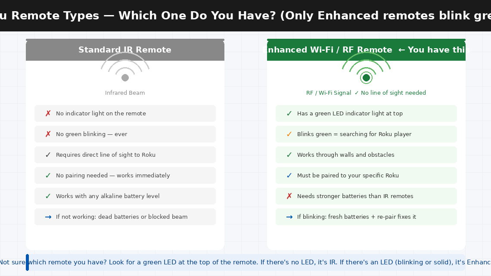
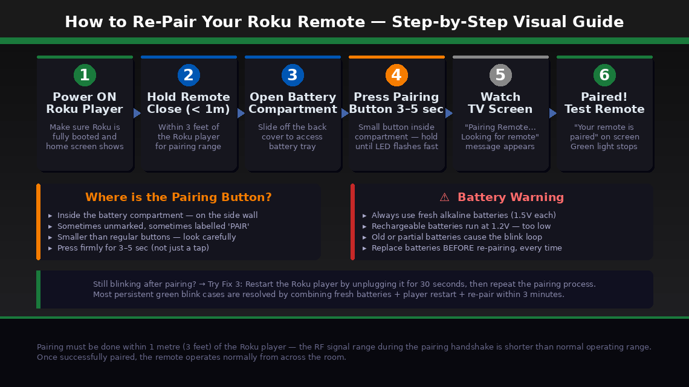
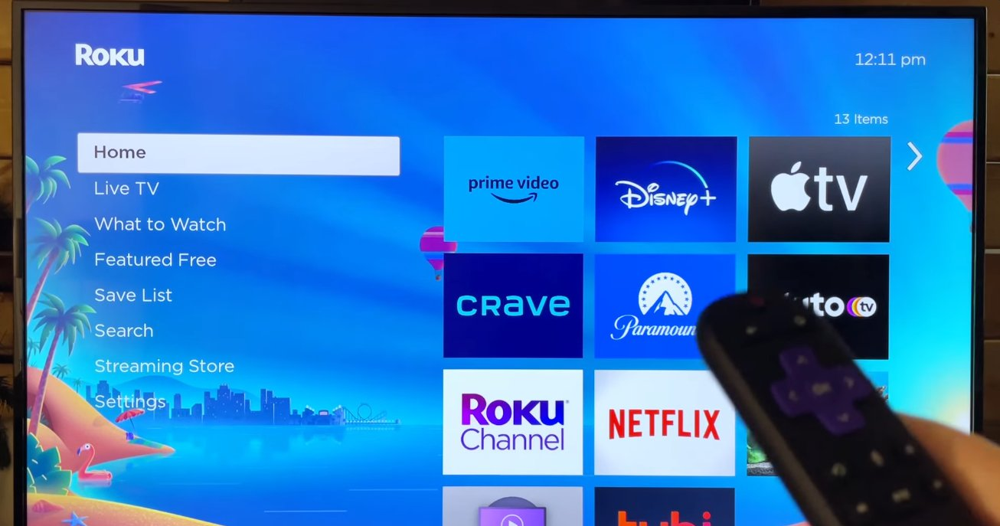

That Blinking Green Light. Nothing Works.
You pick up your Roku remote, press a button, and nothing happens. You glance down and notice the small indicator light at the top of the remote is blinking green — flashing repeatedly, almost frantically — while your Roku player on the TV sits completely unresponsive, waiting for a command that is not getting through.
You press buttons harder. Still blinking. You point it directly at the TV. Nothing. You replace the batteries with ones you think are fresh. Still that persistent green blink, and still no response from your Roku.
Here’s the good news: a blinking green light on a Roku remote is not a sign that the remote is broken. It is a specific, well-understood status signal — and once you know what it means, fixing it is almost always a matter of a few button presses or a quick re-pair that takes under five minutes. This guide covers every cause and every fix, starting with the one that works most often.
What Does the Blinking Green Light Mean?
On a Roku remote, the small LED indicator light at the top communicates the remote’s current connection status. A solid light means one thing, a blinking light means another, and the speed of the blink matters too.
In plain English: a blinking green light means your Roku remote is actively searching for a Roku device to pair with — but it is not currently connected to one.
Roku makes two fundamentally different types of remotes, and understanding which one you have is important because they work completely differently:
- Standard IR (Infrared) Remotes — These use an invisible infrared beam, exactly like a traditional TV remote. They do not need to pair with the Roku player, they have no indicator light, and they work by line-of-sight to the front of the device. If you have one of these and it’s not working, the issue is dead batteries or an obstructed beam — not pairing.
- Enhanced “Point Anywhere” Remotes (RF/Wi-Fi) — These use a short-range radio frequency connection that does not require line of sight. These remotes do have an indicator light, and they do need to be paired to your specific Roku player. This is the remote that blinks green.
When an Enhanced remote blinks green, it means one of three things: the remote has lost its pairing with the Roku player (most common); the batteries are too low to maintain the radio connection but not low enough to stop it powering on; or the remote is stuck in pairing mode after being out of range or after the pairing button was accidentally pressed.

What You’ll Need
You need almost nothing for this fix:
- Two fresh AA or AAA alkaline batteries (check your remote’s compartment for the correct size — bring new ones regardless, battery level is the most common hidden cause)
- Your Roku streaming player (Roku Stick, Express, Ultra, or any model)
- About 5–10 minutes of your time
No tools, no computer, no app required for Fixes 1–5.
6 Fixes — Easiest to Hardest
Work through these in order. The blinking green light is resolved at Fix 1 or Fix 2 for the vast majority of Roku users.
It sounds almost too simple — but the single most common cause of a blinking green light on a Roku Enhanced remote is batteries that appear to have charge but don’t have enough consistent voltage to maintain the RF pairing. Unlike an IR remote, which only needs a brief infrared burst, an Enhanced remote maintains a constant radio connection that requires steady, reliable power.
A battery that reads 1.4V on a multimeter may seem fine — but an Enhanced remote needs a stable 1.5V per cell to maintain pairing. The result is a remote that powers on and blinks green (searching for the Roku) but cannot sustain the connection long enough to complete pairing.
- Open the battery compartment on the back of the remote.
- Remove both existing batteries completely.
- Insert two brand-new alkaline batteries — do not use partially used batteries, rechargeable batteries (which run at 1.2V rather than 1.5V and frequently cause this exact problem), or batteries stored for a long time.
- Close the battery compartment and watch the green light — it will begin blinking as the remote searches for the Roku player.
- If the remote re-pairs automatically within 30 seconds (green light stops blinking, or the Roku home screen responds to your button presses), fresh batteries were the entire problem.
- If the green light keeps blinking after 30 seconds with new batteries, move to Fix 2.
If fresh batteries didn’t automatically restore the connection, the pairing link between your remote and Roku player needs to be manually re-established. This is a simple 60-second process.
- Make sure your Roku player is powered on and displaying something on the TV — the home screen, a menu, or a loading screen. The Roku player must be active to accept a new pairing request.
- Hold your Roku remote within 1 metre (3 feet) of the Roku player for the initial pairing — the RF signal range during the pairing handshake is shorter than the operating range once paired.
- Open the battery compartment of the remote.
- Locate the pairing button — a small button inside the battery compartment, usually on the side wall or directly beside the batteries. It may be labelled “PAIR” or unmarked.
- Press and hold the pairing button for 3–5 seconds.
- A pairing dialog will appear on your TV screen: “Pairing Remote… Looking for remote.”
- Wait 30–60 seconds. When pairing succeeds, the TV screen will display “Your remote is paired” and the green light on the remote will stop blinking.
- Press the Home button to confirm the remote is now controlling the Roku player.

Sometimes the Roku player itself needs to be restarted before it will successfully accept a pairing request — particularly if it has been running for a long time without a restart or if a firmware update is pending in the background.
- Unplug the Roku player’s power cable from the wall (or from the back of the TV if it’s a Roku Stick powered by the TV’s USB port).
- Wait 30 seconds.
- Plug the Roku player back in and wait for it to fully boot — approximately 45–60 seconds until the home screen appears on the TV.
- Once the Roku has fully loaded, attempt the pairing process again from Fix 2 (steps 3–7).
- If you have the Roku mobile app installed on your phone, you can use your phone as a temporary remote to navigate to Settings > Remote & Devices > Pair New Device and initiate pairing from the Roku player’s side — which sometimes succeeds when the button-press method doesn’t.

Enhanced Roku remotes use the 2.4 GHz radio band — the same frequency used by Wi-Fi routers, Bluetooth devices, baby monitors, and microwave ovens. In environments with heavy wireless traffic, the pairing signal can be overwhelmed before it reaches the Roku player.
- Temporarily move the Roku player away from your Wi-Fi router — even one additional metre can reduce interference significantly during pairing.
- Turn off or distance any Bluetooth speakers, headphones, or smart home hubs in the immediate area while attempting to pair.
- If your router broadcasts both 2.4 GHz and 5 GHz networks, try temporarily disabling the 2.4 GHz network during the pairing attempt — your other devices will switch to 5 GHz automatically, clearing the 2.4 GHz band for the Roku remote.
- Attempt the pairing process from Fix 2 again in this reduced-interference environment.
- Once paired successfully, interference typically does not affect ongoing remote operation — only the initial pairing handshake is sensitive to it.
If the remote consistently blinks green but cannot complete pairing after fresh batteries, multiple restart attempts, and interference reduction, the remote’s own pairing memory may have become corrupted. A factory reset clears this memory and forces a completely fresh start.
- Remove the batteries from the remote completely.
- Leave the batteries out for 60 seconds — this drains any residual charge from the remote’s capacitors and clears the pairing memory held in volatile storage.
- While the batteries are out, restart the Roku player by unplugging and replugging its power.
- Reinsert fresh alkaline batteries into the remote.
- Immediately press and hold the pairing button inside the battery compartment for 10 seconds — longer than the standard 3–5 seconds — to force a full pairing reset rather than a standard re-pair attempt.
- Watch the TV — the pairing dialog should appear on screen.
- If the green light stops blinking and pairing succeeds, test all remote buttons to confirm normal operation.
If none of the above fixes resolve the blinking green light and you need to use your Roku right now, the Roku mobile app provides a complete remote replacement that works over your home Wi-Fi network — no physical remote required.
- Download the Roku app from the App Store (iOS) or Google Play Store (Android) — it is completely free.
- Make sure your phone is connected to the same Wi-Fi network as your Roku player.
- Open the app and tap the Remote icon at the bottom of the screen.
- The app will automatically detect your Roku player and give you full remote functionality — including voice search, private listening through your phone’s headphone jack, and keyboard input for faster searching.
The app remote is a permanent solution that works indefinitely, not just a stopgap — many Roku users with physical remotes use the app as their primary control once they discover it.
When to Contact Roku Support
Roku remotes are low-cost consumer accessories with no user-serviceable internal parts. When the hardware itself has failed, the right move is a replacement rather than a repair:
- The green light does not appear at all when batteries are inserted, or the remote shows no signs of power with confirmed fresh batteries. The remote’s power circuit has likely failed.
- The pairing button produces no response on the TV screen, even with the Roku player actively running, the remote within 30 cm of the player, and confirmed fresh batteries. The remote’s radio transmitter may have failed.
- The remote pairs successfully but specific buttons don’t work. Individual button failures indicate physical wear on the membrane switches — not a pairing issue, and not fixable at home.
- Your Roku remote is within its warranty period. Roku offers a 90-day warranty on remotes included with Roku devices and a 1-year warranty on remotes sold separately. A remote that cannot be paired after following all steps is eligible for replacement.
To reach Roku support:
- support.roku.com (US and India) — live chat is typically faster than phone support for replacement requests
- Have your Roku player’s serial number ready — found in Settings > System > About on the Roku player, or on the label on the device itself
Replacement Roku Enhanced remotes are also available for purchase separately — search your Roku player’s model number to confirm compatibility before buying, as not all remotes work with all Roku players.
Quick Summary
| Fix | Difficulty | Time Needed |
|---|---|---|
| Replace batteries with fresh alkaline AA/AAA | Very Easy | 1 minute |
| Re-pair remote via pairing button in battery compartment | Very Easy | 2 minutes |
| Restart the Roku player and re-attempt pairing | Very Easy | 3 minutes |
| Reduce wireless interference during pairing | Easy | 5 minutes |
| Factory reset remote (60-second battery removal) | Easy | 5 minutes |
| Use Roku mobile app as permanent replacement | Very Easy | 3 minutes |
Start at Fix 1 every single time — even if you think the batteries are fine. Fresh alkaline batteries fix the blinking green light more often than any other single step. If batteries alone don’t work, Fix 2 paired with Fix 3 almost always completes the job.
Solved your Roku remote with one of these fixes? The rechargeable battery trap in Fix 1 catches more people than any other cause — rechargeable AAs run at 1.2V instead of 1.5V, and that 0.3V gap is just enough to prevent the RF pairing from completing. Switch to alkaline batteries and the problem often disappears permanently.